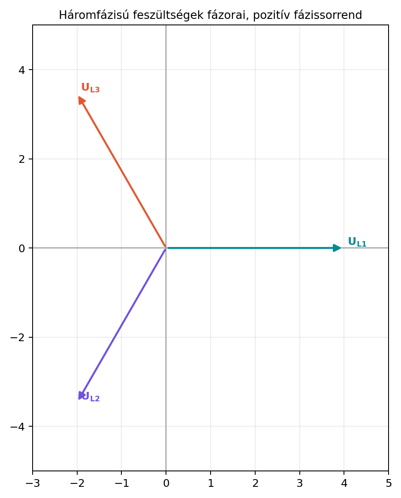
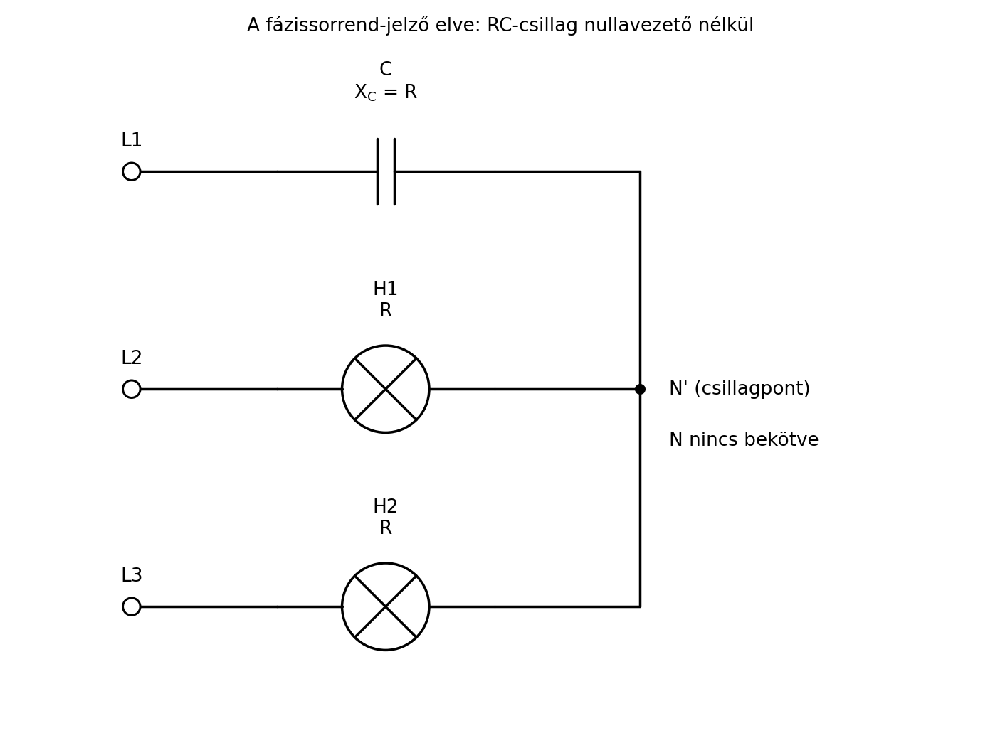
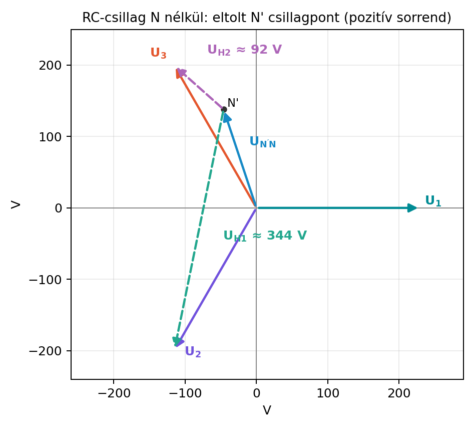
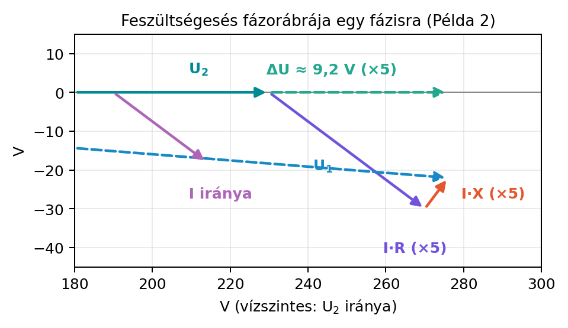

Amikor egy háromfázisú motort először kapcsolunk a hálózatra, két
dolgot mindig tudnunk kell:
– jó irányba fog-e forogni,
– és elég nagy feszültség jut-e a motor kapcsaira akkor is, amikor a
vezeték terhelt.
A forgásirány a fázissorrendtől függ, a kapocsfeszültség pedig a
vezetéken eső feszültségtől. Ezt a két témát kötjük most össze.
Képzeljünk el egy szivattyút. Ha a motor rossz irányba forog, a szivattyú nem szállít, sőt egyes típusok tömítése megsérülhet. Ha pedig a vezeték túl hosszú vagy túl vékony, a motor kisebb feszültséget kap, nagyobb áramot vesz fel, és a kioldása vagy a melegedése miatt leáll. A fázissorrend és a feszültségesés tehát nem „elméleti szépség”, hanem beüzemelési és méretezési alapkérdés.
A háromfázisú hálózat három fázisfeszültsége azonos nagyságú, de egymáshoz képest időben el van tolva. A feszültségek pillanatértékei:
Itt , , , .
Definíció. Fázissorrend a három fázisfeszültség időbeli csúcsainak sorrendje. Az sorrendet pozitív fázissorrendnek nevezzük; az sorrend a negatív (fordított) fázissorrend.
A gyakorlatban a sorrendet úgy is elképzelhetjük: ha az időtengelyen balról jobbra haladunk, az első pozitív csúcsot , a következőt , a harmadikat adja. Ez az 50 Hz-es rendszerben periódusidőn belül egyharmad időközönként következik be.
Egy kétpólusú, háromfázisú motor tekercsei a térben 120°-kal vannak eltolva. Ha rajtuk az időben szintén 120°-kal eltolt áramok folynak, az eredő mágneses mező nagysága állandó, iránya pedig forog.
Ez a jelenség a háromfázisú rendszer egyik legfontosabb építőköve: ezért tud a háromfázisú aszinkron motor külső segédberendezés nélkül elindulni. A motor működését a Szerkezet és működési elv, forgó mágneses mező alfejezet építi tovább.
Az ábra hat pillanatképén a vékony nyilak az egyes tekercsek mezőjét mutatják (hosszuk arányos a tekercs pillanatnyi áramával, negatív áramnál a nyíl a tengely ellentétes irányába mutat), a vastag nyíl az eredőt. Az eredő hossza minden pillanatban , és 60°-os időlépésenként 60°-ot fordul az óramutatóval ellentétes irányban: ez a forgó mező.
A térbeli és időbeli 120°-os eltolást a fázorábra mutatja:

Az ábrán a fázorok a pozitív fázissorrend szerint követik egymást: az óramutatóval ellentétesen forgó fázorcsillagban az után az (−120°), majd az (−240° = +120°) halad el a vízszintes tengely mellett. Ha az egyik fázor hossza például , akkor a hálózati vonali feszültség a fázorok különbségéből adódik: .
Szabály. A háromfázisú forgó mező forgásiránya a fázissorrendtől függ. Ha a motor kapcsaira sorrendben érkeznek a fázisok, a motor általában a típustáblán megjelölt irányba forog. Ha bármely két fázist felcserélünk, a forgó mező forgásiránya megfordul, így a motor is ellenkező irányba forog.
Miért működik ez? Ha és helyet cserél, a fázorok sorrendje az óramutató járásával megegyező irányból ellentétessé válik, vagy fordítva. A forgó mező iránya ezért mindig a fázisok bekötési sorrendjét tükrözi.
Továbbvitt eredmény. A forgó mező és a fázissorrend kapcsolatát használjuk a motor forgásirányának megállapításában, a fázissorrend-mutató értelmezésében, valamint a vezetékméretezés feszültségesés-számításában (Feszültségesés és a vezeték méretezése) és az aszinkron gép működési elvében (Szerkezet és működési elv, forgó mágneses mező).
A fázissorrend-mutató egy olyan kisméretű készülék, amely a három fázis bekötése után jelzi a forgó mező irányát. Három mérővezetékkel csatlakozik az pontokhoz, de nem kell tudnunk előre, hogy melyik fázis valójában melyik; a műszer jelzi, hogy a bekötött sorrend jobbra vagy balra forogna.
Mi van a dobozban? – a mérési elv. Első ránézésre rejtély, hogyan dönthet egy háromvezetékes eszköz a sorrendről, hiszen a három feszültség egyforma nagyságú. A megoldás a Háromfázisú teljesítmény, aszimmetria és a nullavezető alfejezet nullaszakadásos jelensége: ha egy csillagba kötött, nullavezető nélküli terhelés ágai nem egyformák, a csillagpontja eltolódik, és az ágakon eltérő feszültség esik. A legegyszerűbb elvi kapcsolás: az ágban egy kondenzátor, az és az ágban egy-egy egyforma jelzőlámpa (vagy ellenállással sorba kötött LED-ág), a három ág közös csillagpontban () találkozik, nincs bekötve.

A csillagpont eltolódását a Háromfázisú teljesítmény, aszimmetria és a nullavezető alfejezetben tanult csillagpont-eltolódási (Millman-) képlettel számolhatjuk ki. Szemléltető adatokkal (, , a lámpákat állandó ellenállásnak tekintve) pozitív sorrendben (L1–L2–L3) az pont -tal tolódik el; az -re kötött H1 lámpára , az -ra kötött H2-re csak jut (a kondenzátoron ). A fázorábra a -os fázisfeszültség-csillagot, az eltolt pontot és a két lámpa feszültségét mutatja:

A lámpa teljesítménye a feszültség négyzetével arányos, ezért a H1 kb. -szer akkora teljesítményt kap, mint a H2: az egyik fényesen ég, a másik alig pislákol. Ha az és az helyet cserél (negatív sorrend), a két érték is helyet cserél. Szabály: a kondenzátor után következő fázis jelzője világít erősebben. A valódi műszerekben ellenállás-osztó és elektronika (vagy LED-ek) végzi ugyanezt, ezért a fenti értékek csak az elvet mutatják; ilyen kapcsolást a tanuló hálózaton ne építsen (lásd a következő biztonsági korlátot).
Biztonsági korlát. A fázissorrend-mutató használata hálózati feszültség alatti mérést igényel. Ezt csak jogosult, arra felhatalmazott személy végezheti, a hatályos előírások szerint. Tanuló önállóan ne mérjen 230/400 V-os hálózaton.
A mérés előtt ellenőrizni kell, hogy a műszer mérési kategóriája (CAT) megfelelő-e a mérési ponthoz, és a mérőzsinórok sértetlenek. A mérőcsúcsokat először a fázisokra kell csatlakoztatni, csak ezután szabad a műszert bekapcsolni; a jelzett forgásirányt fel kell jegyezni.
Interaktív ábra. A forgó mező fenti ábrájának HTML-változata a három fázisáram időfüggvényét és a forgó mezőt együtt mutatja. A barna (folytonos), fekete (szaggatott) és szürke (pontvonalas) görbe az áramát, a vastag nyíl az eredő mezőt jelzi; a szöghelyzet csúszkával vagy lejátszással léptethető. Az „L2–L3 csere” beállítással két fázis felcserélhető: a forgásirány azonnal megfordul. A frekvencia és a póluspárok száma alapján a lap kiírja a szinkron fordulatszámot (). A statikus ábra a pozitív sorrend hat pillanatképét mutatja.
A fázissorrend-mutató felépítése és a csatlakoztatás biztonságos sorrendje a következő ábrán látható. A műszeren (a) a fázisjelző LED-ek (1) mutatják, hogy mindhárom fázis jelen van-e, a forgásirány-kijelző (2) R ↻ (jobbforgó, L1–L2–L3) vagy L ↺ (balforgó) jelzést ad, a CAT-jelölés (3) a mérési kategóriát adja meg, a három mérővezeték (4) L1, L2, L3 jelölésű, szigetelt csipesszel. Motorleágazáson a biztonságosabb gyakorlat: 1. Q1 kikapcsolva, lakattal biztosítva, a feszültségmentesség ellenőrizve – a csipeszek ekkor kerülnek a lekötött motor sorkapcsának L1, L2, L3 kapcsára; 2. a jogosult személy visszakapcsol, leolvassa a jelzést, majd ismét kikapcsol, és a csipeszek feszültségmentesen kerülnek le; 3. ha a műszer balforgást jelez, feszültségmentesítés után két fázist (pl. L2 és L3) felcserél, és a cserét jelöli.
Így a mérés alatt senkinek sem kell feszültség alatti kapocshoz nyúlnia; ha a csipeszek felhelyezése feszültségmentesen nem oldható meg, a mérést csak jogosult személy végezheti a fenti biztonsági korlát szerint. A motort csak a helyes forgásirány igazolása után kötjük vissza. A CAT-felirat a rajzon példa. A HTML-kiadásban a műszer részei kiemelhetők, a lépések lejátszhatók.
Ha a sorrendet a gépnek folyamatosan figyelnie kell, fázisfigyelő relé kerül a vezérlőkörbe: a működését a Mágneskapcsolók és relék, a bekötését a Motorvédő kapcsoló, hőkioldó, megszakító és szakaszoló alfejezet mutatja.
A vezetéken minden terhelésnél feszültség esik. Ez azért fontos, mert a fogyasztó kapcsain a tápfeszültség így kisebb lesz, mint a hálózat üresjárati feszültsége. Az aszinkron motor nyomatéka (különösen az indító- és billenőnyomaték) nagyjából a kapocsfeszültség négyzetével arányos, ezért már 5–10 % feszültségcsökkenés is érezhető: a motor nehezebben indul, és azonos terhelésnél nagyobb áramot vesz fel, jobban melegszik.
Háromfázisú, szimmetrikus terhelésnél a vezeték egy fázisára eső feszültségesést számoljuk, majd átszámítjuk vonali szintre. A vezetéknek két összetevője van:
ahol és a vezeték hosszegységre eső ellenállása és reaktanciája (), a vezeték hossza (), és pedig a teljes vezeték ellenállása és reaktanciája ().
Összefüggés. Háromfázisú szimmetrikus terhelés feszültségesése:
ahol a vonali áram, a fogyasztó teljesítménytényezője, és pedig egy fázis vezetékének eredő ellenállása és reaktanciája. Az eredmény feszültségesés voltban, a vonali feszültséghez viszonyítva.
Hogy miért éppen , azt egy fázis fázorábrája mutatja meg (a feladatgyűjteménybeli (7.4) példa 2 adataival: , , , ). A betáplálási oldal fázisfeszültsége () a fogyasztói fázisfeszültség () és a vezetéken eső két feszültség összege. Az csepp az áram irányába mutat (a -kal késő áraméval párhuzamos), az csepp -kal az áram előtt jár. Mivel a cseppek valójában csak néhány voltosak, a rajz ötszörösre nagyítja őket, és csak a fázorok végét mutatja:

Az és az nagyságának különbsége – amit a fogyasztó „érez” – közel egyenlő a két csepp vízszintes vetületével: az cseppnek , az cseppnek esik az irányába, együtt fázisonként. A függőleges összetevő csak elforgatja az -et, a nagyságát alig változtatja – ezért közelítés a képlet (itt a pontos különbség ). Vonali szintre -mal szorzunk: – ugyanaz, amit a Kidolgozott példa 2 a képletből ad. Látszik az is, miért nő a feszültségesés kis -nél nagy keresztmetszetű kábelen: minél jobban késik az áram, annál inkább vízszintes az csepp (önellenőrzés 4. kérdés).
A százalékos feszültségesés:
ahol , a hálózat névleges vonali feszültsége.
Ha a vezeték reaktanciája elhanyagolható – például kis keresztmetszetű kábelnél vagy rövid szakaszon – a képlet egyszerűbb:
Mivel , ahol a vezetékhossz méterben, a vezető fajlagos vezetőképessége (), a keresztmetszet (), a feszültségesés:
A réz értéke szobahőmérsékleten megközelítőleg , az alumíniumé kb. (ellenőrizendő: üzemi hőmérsékleten a pontos érték a kábel adatlapjából származik).
Szabvány. A kisfeszültségű berendezések méretezésénél a feszültségesésre a szabvány ajánlott határértékeket ad. Általában világítási áramköröknél 3 %, egyéb fogyasztói áramköröknél 5 % a szokásos tervezési határ (ellenőrizendő: az aktuális MSZ HD 60364-5-52 szerinti nemzeti előírás). A pontos értékek a berendezés jellegétől és a hálózati engedélyes feltételeitől is függnek.
A gyakorlatban a feszültségesés számítása nem csak a vezeték hosszán múlik. A teljes hurokban a transzformátortól a fogyasztó kapcsaiig több vezetékszakasz is sorba kapcsolódik, ezért a tervezéskor a csatlakozási ponttól számított leghosszabb áramkört vizsgáljuk.
Szivattyúmotor rossz forgásiránya. Egy mezőgazdasági telepen háromfázisú szivattyúmotort szereltek be. A motor beindult, de a szivattyú nem szállított vizet. A szerelő először a szivattyúra gyanakodott, pedig a motor forgásiránya volt fordított. Fázissorrend-mutatóval ellenőrizték a betáplálást, és megállapították, hogy az elosztóban két fázis fel volt cserélve. Két fázis megcserélése után a szivattyú azonnal megfelelően működött. A tanulság: háromfázisú motor beüzemelésekor mindig ellenőrizni kell a forgásirányt, és ha a gép forgásiránya hibás, elég két fázist felcserélni.
Hosszú kábel okozta feszültségcsökkenés. Egy udvari világítási oszlophoz 4 mm²-es kábelt húztak, de a fényforrások tompán világítottak. A számítás megmutatta, hogy a 150 m hosszú kábelen a feszültségesés meghaladta a 6 %-ot, mert a terhelést és a hossz közös hatásával nem számoltak. (Ha emellett a megszakító is melegedett, az külön okra, például laza kötésre utal, nem a feszültségesésre.) A javítás a keresztmetszet növelése volt; ezzel a feszültségesés 3 % alá csökkent. Az eset arra figyelmeztet, hogy a hossz növelésekor nem elég a terhelhetőséget nézni, a feszültségesést is ellenőrizni kell.
1. hiba – „Elég a vezeték terhelhetőségét
megnézni.”
A szerelő azt hiszi, ha a kábel áramterhelhetősége elég, a
feszültségesés is biztosan megfelel. Ez téves: hosszú áramkörnél a
feszültségesés gyakran hamarabb túllépi a határt, mint a terhelhetőség.
Helyes gyakorlat: mind a terhelhetőséget, mind a
feszültségesést számítani kell.
2. hiba – Az egy- és háromfázisú képlet
összekeverése.
Egyfázisú körben az áram a fázis- és a nullavezetőn is átfolyik, ezért
(a hurok hossza
),
a viszonyítási alap
.
Háromfázisú szimmetrikus terhelésnél a nullavezetőben nem folyik áram:
,
a viszonyítási alap
.
Aki a háromfázisú képletet egyfázisú körre alkalmazza (vagy fordítva),
rossz eredményt kap. Helyes gyakorlat: először döntsd
el a kör típusát, és ahhoz válaszd a képletet.
3. hiba – Két fázis felcserélését elfelejtik, vagy nem
jelölik be.
A motort rossz irányba kötik, majd megcserélnek két fázist, de nem
készítenek új jelölést. Később a hibakeresésnél a kábelerek jele és a
tényleges bekötés eltér. Helyes gyakorlat: a
fáziscserét dokumentálni kell, és a kapcsokon/feliratokon is jelölni,
hogy a bekötés szándékosan tér el a kábel eredeti jelölésétől.
4. hiba – A fázissorrend-mutatót éles hálózaton, védőeszköz
nélkül használják.
A hálózati feszültség közvetlen mérése áramütéses veszélyt jelent.
Helyes gyakorlat: csak jogosult végezheti, megfelelő
CAT besorolású műszerrel, sérülésmentes zsinórokkal.
Gyakorlás: ennek az alfejezetnek a kidolgozott példái, gyakorlatai és megoldással ellátott feladatai az Összefoglaló feladatgyűjtemény villanyszerelő tanulóknak című kötet 7.4 szakaszában találhatók.
A háromfázisú hálózat feszültségei azonos nagyságú, egymáshoz képest 120°-kal eltolt fázorok. A pozitív fázissorrend , a negatív . A forgó mágneses mező a térben 120°-kal eltolt tekercseken az időben 120°-kal eltolt áramok hatására jön létre; iránya a fázissorrendet követi. Két fázis felcserélése megfordítja a forgó mezőt, tehát a motor forgásirányát.
Háromfázisú szimmetrikus terhelés vezetéken fellépő feszültségesése:
ha és a fázisvezető ellenállása és reaktanciája, a vonali áram. A reaktancia elhanyagolásakor:
A százalékos feszültségesést adja. A gyakorlatban a feszültségesést a terhelhetőség mellett mindig ellenőrizni kell, mert hosszú kábelnél a feszültségesés gyakran hamarabb túllép a megengedett értéken, mint a kábel terhelhetősége. A fázissorrend-mutató használata hálózati feszültség alatt csak jogosult személynek engedélyezett, megfelelő CAT besorolású műszerrel.
Továbbvitt eredmény. A forgó mező fogalma és a fázissorrend szerepe a motorok bekötésénél és a feszültségesés méretezésénél is alapvető. Ezt a tudást használjuk a Feszültségesés és a vezeték méretezése és a Szerkezet és működési elv, forgó mágneses mező alfejezetben.
Nincs felhasznált, olvasott forrás. A feszültségesés határértékei és a kábel hosszegységre eső ellenállás-/reaktanciaértékei tájékoztató jellegűek; a tényleges méretezéshez a hatályos szabványt és a gyártói adatlapot kell ellenőrizni.